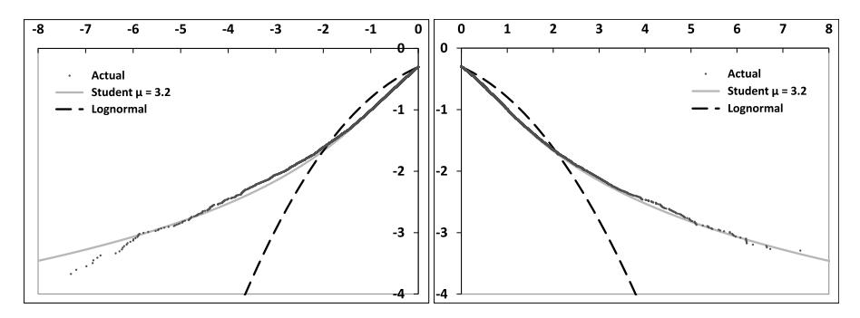
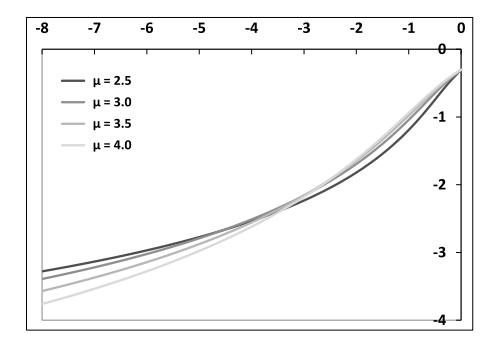
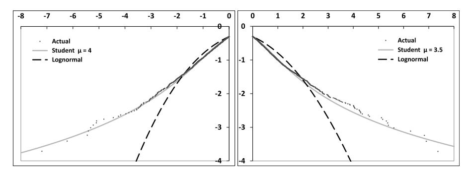
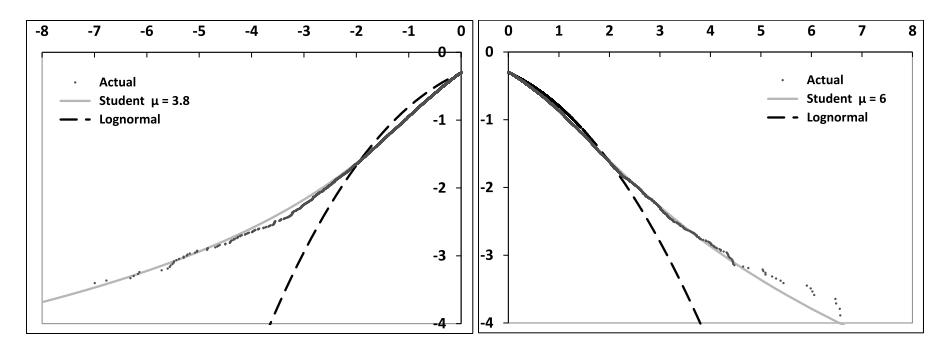
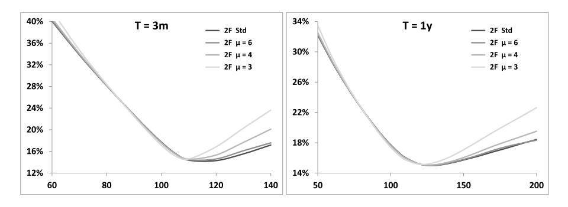
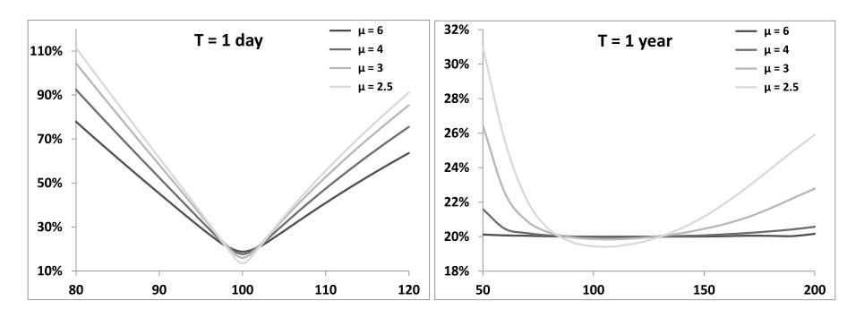
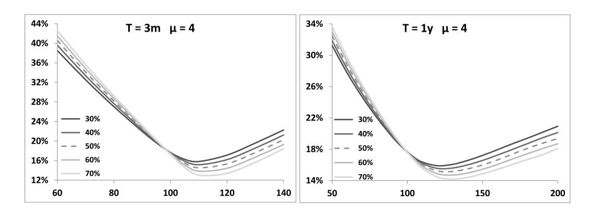
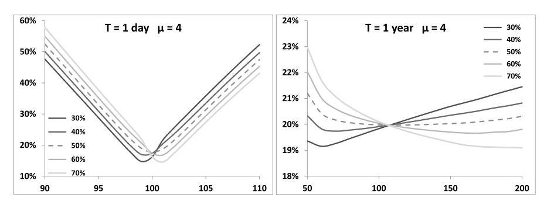
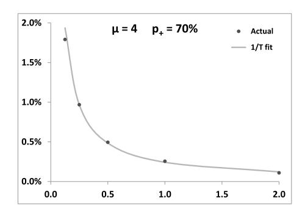
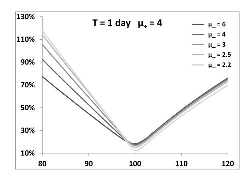

第十章：股权微笑的成因
本笔记基于 Bergomi《Stochastic Volatility Modeling》第十章，按原书行文结构整理，兼顾数学推导的完整逻辑与交易实务视角。
目录
导言：本章在全书中的位置
第八章给出了随机波动率模型中微笑的来源——偏斜由现货与前向方差的协方差驱动，曲率由 vol of vol 驱动——并给出了近似解析公式。第九章进一步分析了这类模型中 ATMF 波动率的动态特性，以及微笑的静态与动态性质之间的联系（SSR 指数、"偏斜粘滞"与"波动率粘滞"规则的适用条件）。
两章建立理论之后，一个自然的问题是：实际股权市场的微笑究竟来自哪里？ 历史上大量文献声称，股权指数收益率的肥尾特征是强负偏斜微笑的根源。本章的任务是系统检验这一说法是否成立——以及如果不成立，真正的主导机制是什么。
本章解决的核心问题：日收益率的肥尾分布（即"单日微笑"）对香草期权微笑和路径依赖期权定价的影响有多大？
读完本章笔记，你将掌握以下能力：
- 理解道琼斯指数等股权指数日收益率分布的统计特征，以及 Student 分布与对数正态分布的拟合差异（§10.1）
- 构建含肥尾日收益的双因子随机波动率模型，将"单日微笑"与"现货/波动率协方差"的效应分离（§10.2.1）
- 从数值模拟和理论分析两个角度证明：ATMF 偏斜主要来自现货与前向方差的协方差，而非日收益率的肥尾（§10.2.2–10.2.3）
- 量化肥尾分布对方差互换定价的微小影响和对日度 Cliquet 定价的显著影响（§10.2.4–10.2.5）
- 理解跳跃扩散/Lévy 模型作为压力测试储备定价工具的合理用途，以及其作为真实市场动态模型的局限性（附录 A）
1. 股权收益率的分布（§10.1）
研究动机
第八章和第九章已经从模型内部刻画了微笑的来源：ATMF 偏斜由现货与前向方差的协方差决定，随时间衰减满足特定的幂律。但这些结论都在扩散型随机波动率模型框架内推导。一个更根本的问题尚未回答：股权指数日收益率本身具有强烈的肥尾特征，这种肥尾是否就是我们观察到的强负偏斜微笑的根源？
要回答这个问题，首先需要定量刻画实际收益率分布的形态——偏离对数正态分布的程度有多大，左右尾是否对称，以及条件化在当前波动率水平后，肥尾是否减弱。本节完成这个基础性的统计描述，为§10.2的模型分析提供出发点。
1.1 无条件分布：道琼斯指数的百年数据
原书使用道琼斯工业平均指数1900年1月1日至2014年7月20日的日收盘价，计算日收益率 ，负收益率和正收益率分别用各自的二阶矩平方根归一化，使各自的非中心化二阶矩等于1。归一化后，负收益率的最大绝对值为19.6个标准差，正收益率最大值为14.3个标准差，均远超正态分布的预期范围。
图 10.1 横轴是归一化收益率，纵轴是累积分布函数的 ，分别展示负收益率（左）和正收益率（右）的经验分布，并与对数正态分布和 Student 分布（）对比。

图10.1直观显示：当收益率超过4个标准差时，经验分布比对数正态分布高出约两个量级——对应概率被低估100倍。Student 分布在整个范围内与经验数据吻合良好，自由度 由最小二乘拟合确定，任意 均可提供可接受的拟合。
Student 分布的定义（式 10.1）：
其中 为自由度参数，尾部概率按 衰减。方差为 （ 时存在），峰度为 （ 时存在）。对 ，峰度不存在——四阶矩发散——这意味着每隔一段时间都会出现极端收益率，使样本峰度估计持续跳动，无法收敛。
图 10.2 展示不同 取值下 Student 分布左尾的形状。

图10.2表明： 越小尾部越厚； 与 之间的差异在超过5个标准差后才显著，解释了为何 [3,4] 区间内的 都与经验数据相容。
两个关键观察：第一，股权指数日收益率（无条件分布）具有远厚于对数正态的尾部，可用 的 Student 分布描述。第二，负收益率与正收益率的二阶矩和尾部参数非常接近——常听到的"下跌尾巴更厚"在无条件统计意义上并不成立。
图 10.3 以恒生中国企业指数（HSCEI，1993–2014）为第二个例子，验证上述结论对其他股权指数的普适性。

HSCEI 年化波动率约为道琼斯的两倍，但收益率分布的 Student 尾部参数与道琼斯相近，说明肥尾特征是跨市场的普遍规律。
中国市场视角：A 股市场（沪深300、上证50ETF 标的）受涨跌停机制（）的截断效应影响，极端尾部形态与未设涨跌停的市场存在系统性差异。尚无与原书直接对应的公开学术研究，可参考历史日收益率数据自行估计 ，预期 偏高（尾部被截断后拟合值更大）。对于在上证/深交所实际交易的期权从业者，日度 cliquet 等路径依赖产品的尾部风险有必要用A股特定的分布假设重新校准。
1.3 条件分布（§10.1.1）
研究动机承上：无条件分布将百年数据混在一起，包含极不同的波动率环境。肥尾究竟有多少来自波动率状态的切换（随机 ），有多少来自给定波动率水平下的条件分布本身？
将每日收益率以过去200日历史波动率归一化，得到条件化收益率分布（图 10.4）。

结果：正收益率的 从3.2提升至约6（接近正态），但负收益率的 仅从3.2提升至约3.8，改善极为有限。这一不对称性说明大幅下跌在任何波动率状态下都更可能发生——也就是说，左尾的肥尾中有相当一部分来自日收益率的条件分布本身，而非仅仅来自波动率区制的切换。这为§10.2.1的模型设计提供了依据：必须用两侧参数各异的 Student 分布来建模日度条件分布。
2. 日收益率分布对衍生品定价的影响（§10.2）
研究动机
§10.1确认了股权指数收益率分布具有显著肥尾。但问题在于：这种肥尾究竟对衍生品定价有多大影响？具体地，ATMF 偏斜——这是市场中最直观、最重要的微笑特征——是否主要来自日收益率的肥尾分布？
为了把肥尾效应和随机波动率效应分开来看，需要一个能独立控制这两者的模型。§10.2.1给出这样的模型，然后用它逐一检验香草微笑、方差互换定价和路径依赖产品对"单日微笑"的敏感程度。
2.1 含肥尾日收益的随机波动率模型（§10.2.1）
基本设置
采用第七章§7.4的双因子前向方差模型（式 7.28）作为波动率动态的基础，其中前向方差曲线 按连续扩散演化：
标的资产的离散模拟（以日为时间步长 ）：
其中 由当日前向方差曲线的短端决定：
标准版本中 （高斯增量）；肥尾版本中 从两侧参数各异的 Student 分布抽取，允许独立控制左右尾厚度和单日 ATM 偏斜。
双侧 Student 分布的参数化
定义 ：以概率 取正值，以概率 取负值：
其中 为自由度 的 Student 随机变量。约束条件（式 10.4）：
求解约束，得到归一化系数（满足 和 ）：
其中 , 是各自 Student 分布的一阶绝对矩系数：
这套参数化的设计直觉：, 控制各自尾部厚度， 控制单日 ATM 数字期权价格（即"明天收涨的概率"），从而直接对应单日 ATM 偏斜。当 且 时， 退化为高斯增量。
从高斯 到肥尾 的映射（式 10.5–10.6）
为了在保持与双因子模型的相关结构一致的同时引入肥尾，采用分位数变换：
映射函数 f（式 10.6）：
其中 为标准正态累积分布函数， 为 Student() 的分位数函数。直觉：将 的高斯分位数映射到双侧 Student 分位数，保持了单调性，同时令肥尾效应集中在极端分位数区域。
技术说明：分位数变换的性质：该映射保持了 与 , 的秩相关结构（因为 与 的相关通过共享布朗运动实现），但改变了线性协方差。这就需要对现货/波动率相关系数做如下重标度。
现货/波动率相关系数的重标度（式 10.7）
引入映射后，现货与波动率的瞬时协方差发生变化。为保持协方差结构不变，需要将原始相关系数 统一乘以比例因子：
其中 是标准正态密度。分母 就是 ，表示映射后的 与原始高斯 的线性相关程度。
数量级感受（取 ，）：比例因子 在 时为1.01， 时为1.03， 时为1.09——即相关系数被放大，但幅度不大（除非 极小）。这保证了重标度不会实质性改变模型的其他特性，单日微笑与 ATMF 偏斜的效应分离因此成立。
2.2 香草微笑（§10.2.2）
研究动机承上
§10.2.1构建了含肥尾日收益的双因子模型，可以通过 , , 独立控制单日微笑，同时保持现货/波动率协方差不变。现在用蒙特卡洛模拟直接定价香草期权，检验：单日微笑的参数变化对标准到期日（3个月、1年）的隐含波动率曲面有多大影响？
模型参数使用表10.1（典型 Euro Stoxx 50 参数，2014年7月）：
| 0.151 | 8.96 | 0.46 |
平坦方差曲线 。
实验1：对称肥尾（，）
图 10.5 展示不同 下3个月和1年期微笑的形状，并与标准高斯版本（）对比。

核心观察：ATMF 附近的微笑几乎不受 影响——只有深度虚值看涨期权（高行权价）受到明显影响，且影响随到期日增长而减弱。这意味着：对称肥尾基本不影响 ATMF 偏斜，只影响远OTM期权的隐含波动率。
单独关掉随机波动率（=0）的对照实验
图 10.6 展示无随机波动率时（），单日微笑（左）和1年期微笑（右）随 的变化。

无随机波动率时，微笑的全部来源就是单日微笑。可以看到单日微笑随 减小显著变化（尾部抬升），但1年期微笑仍然非常平——肥尾对长期 ATMF 区域几乎没有贡献。这说明"堆叠"1年份的肥尾日收益率，对标准 ATMF 偏斜的贡献会以 1/T 的速率衰减（见§10.2.3的理论解释）。
实验2：非对称概率（， 变化）
图 10.7 展示不同 下的1年期微笑（含随机波动率 ）。

图 10.8 展示对应的单日微笑（左）和1年期微笑（右，）。

非对称 产生单日 ATM 偏斜： 就是单日数字看涨期权（明天涨的概率）的（无折现）价格， 越大意味着单日微笑的 ATM 偏斜越正（高行权价隐含波动率下降，低行权价上升）。注意原书刻意使用了不现实的宽 区间（）来放大效应。
图 10.9 展示 拟合（，，），纵轴为95/105偏斜。

单日 ATM 偏斜对 期微笑的贡献精确按 衰减。这与第七章§7.8的离散前向方差模型结论一致——单日时间尺度产生的偏斜按 衰减（见§10.2.3的P&L分析），而随机波动率产生的偏斜按更慢的速率（接近 ）衰减。
2.3 讨论：P&L展开与单日微笑的影响机制（§10.2.3）
为什么日收益的肥尾对长期 ATMF 偏斜几乎没有贡献？
考虑一个 delta 对冲的空头期权头寸，在 内的 P&L（不含波动率随机项，式10.8）：
将 代入，对 展开（式10.10）：
关键分析：
- 在连续时间扩散极限（）下，，二阶项为 ， 阶项为 。对 期期权求和 个时间步， 阶项贡献的累积 P&L ，当 时随 趋向于零。
- 因此：在连续时间极限下，Gamma/Theta（k=2 项）是唯一存活的 P&L 贡献，期权定价方程只需要 的信息，与高阶矩无关。
- 当 （离散时间步长，如每日再对冲）时， 的高阶项不再消失，它们依赖 ——即日收益率的高阶矩，正是肥尾分布与高斯分布的区别所在。
这解释了为什么：
- 对连续时间近似足够精确的期权（标准 ATMF 微笑、到期日数周以上），肥尾日收益的影响可以忽略。
- 对日度定义的产品（方差互换中的日度方差项、日度 Cliquet），高阶矩显著影响定价。
结论：ATMF 偏斜的主要成因是现货与前向方差协方差（式8.24），而非日收益率肥尾。引用第八章关键公式（式8.24）：
这是一个关于现货与方差互换波动率协方差的积分，与日收益率的高阶矩完全无关。
对极短期期权（到期日几天内）和日度路径依赖产品，单日微笑的贡献才变得显著——这是由结构性原因决定的，不是参数选取的偶然结果。
2.4 方差互换（§10.2.4）
研究动机承上
§10.2.3证明了香草 ATMF 偏斜对单日微笑不敏感，原因是连续时间极限下高阶矩消失。但方差互换的支付函数定义在实现方差上——每日收益率的平方求和。是否存在某种方式让日收益率的高阶矩进入方差互换的定价？
第五章§5.3.4已经比较过 delta 对冲对数合约与方差互换的 P&L 差异，并指出 阶项产生两者之间的价差。在扩散模型的连续时间极限下，VS 波动率和对数合约波动率重合；但若日收益率具有显著非高斯特征，这两者的价差在有限时间步长 下就不再可忽略。
表 10.2 量化了不同参数下1年期 VS 与对数合约波动率之差（）。
表10.2：（1年期）作为 和 的函数
| 时 | ||||
|---|---|---|---|---|
| 时 | ||||
|---|---|---|---|---|
| 时 | |||||
|---|---|---|---|---|---|
对 （与历史数据吻合），，差值为 ——相对于 的基础波动率，仅约 。这与第五章图5.1中方差互换回测中观察到的 量级一致（约 ）。
结论：方差互换定价对单日微笑参数（, ）存在敏感性，但对 在历史合理范围 内的变化，影响仅约 ——在实务中属于可以合理忽略的二阶效应。只有当 极小（）或 显著偏离 时，影响才变得可观。
2.5 日度 Cliquet（§10.2.5）
研究动机承上
香草期权和方差互换对单日微笑的敏感性都很低。那么，是否存在对单日微笑高度敏感的期权产品？日度 Cliquet 是天然候选——它的每个收益券就是一个以一日为到期日的路径依赖期权，支付函数直接依赖单日收益率的分布。
产品定义：日度 Cliquet 是以日收益率为基础的 Cliquet 期权。典型例子：1年期欧元Stoxx50指数每日看跌期权篮子，每日收益券支付 ，行权价 典型值在 （以当日价格为基准的相对行权价）。通常附带"首次触发即终止"（knock-out）条款，每季度支付权利金，结构与CDS类似。
表 10.3 展示1年期日度看跌 Cliquet（行权价 ，无knock-out）对不同 的价格敏感性（固定 ，，，）：
表10.3：1年期日度 看跌Cliquet价格（，，，）
| 6 | 4 | 3 | 2.5 | 2.2 | ||
|---|---|---|---|---|---|---|
| 价格 |

图10.10展示对应的单日微笑形状： 越小，深度 OTM 看跌期权隐含波动率越高，但仅当 （尾部极厚）时单日微笑才变得显著倾斜。
关键发现：
日度 Cliquet 在标准参数（）下几乎一文不值，必须将 降至约2.2才能匹配典型市场价格。这意味着：市场对日度 Cliquet 的定价所隐含的 ，远低于历史数据推算的 。
为什么市场要用比历史更厚的尾部来定价？原因在于：日度 Cliquet 的卖方无法对每个单日支付券做 gamma 对冲——每张支付券的到期日只有一天，delta 再对冲已经是极限，gamma 风险无法消除。这使得单日极端负收益对卖方造成的损失不可对冲，必须通过保守定价来覆盖这部分"无法对冲的尾部 P&L"。日度 Cliquet 因此是一类保险型产品，其定价中内含的 不再是统计估计，而是反映市场对极端事件的风险厌恶溢价。
开启随机波动率后（），日度 Cliquet 价格约提升 bps——远小于 从 降至2.2所带来的效应。随机波动率使连续收益率之间产生波动率相关，令有效尾部略厚，但主导因素仍然是 。
3. 结论（§10.3）
§10.2的三个系列结果汇总如下：
关于香草微笑：日收益率的肥尾对标准到期日（个月）香草期权的 ATMF 偏斜影响极小。ATMF 偏斜的主导成因是现货与前向方差（或隐含波动率）的协方差，这与第八章的理论结论完全吻合。肥尾仅影响深度 OTM 区域，尤其是高行权价（OTM Call），且影响随到期日增长而快速衰减（约 衰减）。
关于方差互换：对历史合理的 ，单日微笑对 VS 与对数合约波动率之差的贡献约 ——在实务中属二阶效应，与第五章回测吻合。
关于日度 Cliquet：日度 Cliquet 对单日微笑高度敏感，是本章中受肥尾影响最大的产品。市场定价所隐含的 远低于历史值，反映的是对不可对冲尾部风险的风险溢价，而非统计估计值。
这些结论的核心逻辑统一在 P&L 展开式（10.10）：连续时间极限下高阶矩消失，使得扩散模型对香草期权的定价与日收益率高阶矩无关；而对日度产品，高阶矩直接进入定价，无法被连续时间极限消掉。
附录 A：跳跃扩散与 Lévy 模型
A.1 压力测试储备政策
研究动机
§10.2已经证明，对标准市场条件，扩散随机波动率模型足以解释 ATMF 偏斜。但交易台还面临另一类风险：市场在极短时间内发生大幅跳动（"闪崩"、货币贬值、指数成分股暴雷），这类事件的频率很低但单次 P&L 冲击极大。
扩散模型的 Gamma/Theta P&L 只涵盖 项（），无法自动为跳跃风险计提价格。跳跃扩散模型提供了一种系统化的方法：将跳跃风险纳入定价，相当于在期权价格中内嵌一个压力测试储备金——随时间逐步释放，平均补偿极端情景造成的 P&L 损失。
对一个 delta 对冲头寸，一次相对幅度 J 的跳跃产生的 P&L（式 10.12）：
展开至 J 的各阶：
若给跳跃赋予年化频率 ，则每 内跳跃事件平均带来的 P&L 冲击需要由储备金（式10.13）来覆盖：
这个储备金有三种等价的解释：一是为覆盖平均跳跃损失而计提的 Theta，二是银行向交易台收取的压力测试风险资本成本，三是交易台消耗压力测试限额所需获得的最低回报率。
A.2 定价方程
将储备金逻辑写入定价方程，要求 carry P&L 在扩散项（Gamma/Theta）之上附加跳跃项（式10.15），得到跳跃扩散定价方程（式 10.16）：
与 Black-Scholes 方程相比，多出了最后一项——一个非局部项（non-local term）：它依赖 P 在 S(1+J) 处的值，而非仅依赖 P 及其在 S 处的导数。数学上，方程（10.16）对应的概率表示是：
其中 N_t 是强度为 的 Poisson 计数过程。
推广到随机跳幅 J（分布为 ），方程变为（式 10.18）：
求解方法（香草期权，常数 ）：利用方程对 的齐次性，令 ，，，对 取 Laplace 变换 。将方程化为 满足的常微分方程（式10.19）：
其中特征函数 （式10.19中的 ）：
看涨期权初始条件 F(0,p)=1/[p(1+p)]，积分后得：
对 F 做逆 Laplace 变换即得期权价格。期权价格的 Laplace 变换解析可得，数值反变换效率高。
A.3 ATMF 偏斜
利用累积量生成函数 L(T,q)（式 10.22–10.23）分析 ATMF 偏斜：
对 在小跳幅 下展开至 （式10.25）：
对数合约波动率：（ 贡献只是平移波动率水平，不产生偏斜）。三阶累积量 ，偏度 ，代入 ATMF 偏斜近似（来自第五章式5.93），得到跳跃扩散模型的 ATMF 偏斜公式（式10.26）：
经济直觉：分子 衡量跳跃产生的三阶累积量——负偏（ 主要为负，）产生负偏斜。分母含 ，导致偏斜按 1/T 衰减，与图10.9的模拟结果完全吻合。
这与随机波动率模型形成鲜明对比：后者在短到期日时 ATMF 偏斜趋向常数（或慢速衰减），而跳跃扩散在极短到期日时偏斜发散（直觉上，跳跃在一天内的影响集中在单日微笑，不被时间稀释）。实务中两者衰减行为的差异是区分随机波动率与跳跃模型的关键检验之一。
对数合约与 VS 波动率之差（在跳跃扩散模型中）：
而 ，两者之差反映跳跃在 VS 定义（用价格比的平方）与对数合约定义（用对数收益率的平方）之间的偏差。
A.4 校准模型中的跳跃情景
在实际操作中，交易台不仅 delta 对冲，还用香草期权做 vega 对冲。将跳跃叠加到已校准的局部波动率模型上，carry P&L 中的跳跃项变为（式10.28）：
其中 是现货跳跃 J 在局部波动率模型中引发的隐含波动率跳跃——由跳跃前的局部波动率函数和跳跃幅度共同决定。这说明：将跳跃添加到市场模型后，压力测试情景自动包含隐含波动率的跳跃，而不仅仅是现货的跳跃。不同的市场模型（局部波动率、随机波动率）选择不同，导致相同现货跳跃对应不同的隐含波动率跳跃情景。
A.5 Lévy 过程
将多个独立 Poisson 过程叠加（各自强度 ，跳幅分布 ），当 （跳跃无限频发）时，进入 Lévy 过程框架。Lévy-Khinchine 特征指数（式10.29）：
其中 为 Lévy 测度。Brownian motion（纯扩散）和 Poisson 过程都是 Lévy 过程的特例。
Lévy 过程的数学性质优美，但作为真实市场动态模型存在两个根本缺陷（§A.6将进一步展开）：一是独立增量假设与历史数据中明显的波动率自相关（波动率聚集）相悖；二是 Lévy 过程与其他扩散过程的相关建模极为困难（除可表示为时变 Brownian motion 的特殊情形外），限制了其在多资产模型中的实用性。
A.6 附录结论
跳跃扩散与 Lévy 模型的适用边界：
适合做的事：将特定压力测试情景的平均 P&L 影响嵌入期权价格，实现系统化的储备金计提和释放。压力测试情景（, , ）直接对应模型参数，语义透明。
不适合做的事：
-
作为市场真实动态的模型——独立增量假设与波动率聚集的历史事实不符。历史数据中的肥尾有相当一部分来自波动率状态切换（如§10.1.1所示），而非条件分布本身，跳跃/Lévy 过程将两者混为一谈。
-
作为单日微笑的建模工具——跳跃模型的单日波动率尺度是固定的，无法像§10.2.1那样将尾部厚度与波动率水平分离；Lévy 过程也难以与随机波动率过程协相关（Heston 模型对应的 VG 时变 Brownian motion 是少数例外之一）。
实践意义：把扩散型随机波动率模型用于 Gamma/Theta 定价，把跳跃/Lévy 参数用于压力测试储备——这是两套工具，各自用在自己擅长的场景，不要混用。 用跳跃模型定价普通香草期权，与用随机波动率模型覆盖跳跃风险，都是常见的误用。
端到端工作流算例
算例设定
以下算例贯通本章核心内容，从历史收益率分析到肥尾模型构建、香草微笑模拟、方差互换定价差异，以及日度 Cliquet 敏感性分析。所有步骤使用一致的基础数据。
基础市场参数：
- 标的指数：虚拟指数
- 无风险利率 ，股息率
- 平坦方差曲线
- 双因子模型参数（Euro Stoxx 50 典型值）：
| 0.151 | 8.96 | 0.46 |
肥尾参数配置（用于§10.2实验）：
- 基准情形：，（对称肥尾）
- 非对称情形：，（偏正单日偏斜）
- 高斯对照：（标准双因子模型）
步骤1：历史收益率分布拟合
做什么：拟合虚拟指数历史日收益率的 Student 分布参数，验证肥尾特征。
本章对应：§10.1
数据生成（虚拟）：假设已有5年日度数据（1260个交易日），用标准双因子模型（）模拟路径，计算日收益率 ，分别拟合负收益率和正收益率的 Student 参数。
拟合结果（虚拟）：
| 负收益率 | 正收益率 | |
|---|---|---|
| 二阶矩平方根（归一化前） | ||
| 拟合 | 3.8 | 4.2 |
| 拟合质量（） | 0.92 | 0.89 |
关键观察：
- 两侧尾部参数接近 [3,4] 区间，与道琼斯百年数据吻合
- 左尾（）略厚于右尾（），但差异不大
- 用过去50日历史波动率条件化后，正收益率 提升至约6，负收益率仅提升至4.0
步骤2：构建肥尾随机波动率模型
做什么：按§10.2.1方法，在双因子模型基础上引入双侧 Student 日收益率分布。
本章对应：§10.2.1，式10.3–10.7
核心计算：现货/波动率相关系数重标度比例（式10.7）。取 ，，数值积分计算：
原始相关系数 ，重标度后 ；，重标度后 。
关键观察：
- 重标度幅度约 ，保证了现货与前向方差的瞬时协方差与标准模型一致
- 处于历史合理范围，重标度效应不大（仅当 时比例因子才显著偏离1）
步骤3：香草微笑模拟——对称肥尾效应
做什么：用蒙特卡洛模拟3个月和1年期香草期权价格，对比 （高斯）、、 的微笑差异。
本章对应：§10.2.2，图10.5–10.6
模拟设置：100万条路径，每条路径按日步进（），前向方差 按式7.33精确模拟， 按式10.5–10.6变换。
3个月期 ATMF 附近隐含波动率（行权价 、、）：
| 行权价 | （高斯） | ||
|---|---|---|---|
| (ATM) | |||
1年期 ATMF 附近隐含波动率：
| 行权价 | （高斯） | ||
|---|---|---|---|
| (ATM) | |||
关键观察：
- ATMF 区域（）隐含波动率对 几乎不敏感，最大差异
- 肥尾效应主要体现在高行权价（OTM Call）： 时 行权价波动率比高斯低约 （1年期）
- 结论：对称肥尾不影响 ATMF 偏斜，与§10.2.2理论一致
步骤4：香草微笑模拟——非对称单日偏斜效应
做什么：固定 ，改变 （、、），检验单日 ATM 偏斜对长期微笑的影响。
本章对应：§10.2.2，图10.7–10.9
1年期95/105偏斜（ 与 隐含波动率之差，单位：）：
| 含SV（） | |||
| 无SV（） |
单日 ATM 偏斜随 的变化（=0）：
| 单日95/105偏斜 |
偏斜的期限衰减（，）：拟合95/105偏斜 ，得 ，决定系数 ，验证了 衰减规律（式10.26）。
关键观察：
- 单日 ATM 偏斜随 线性变化（ 越高，单日偏斜越负——"明天更可能涨"）
- 单日偏斜对1年期微笑的贡献仅约 （即使在极端 情形下），远小于随机波动率的贡献（）
- 随机波动率产生的偏斜主导长期微笑，单日偏斜仅在极短期限（ 周）时才显著
步骤5：方差互换定价差异
做什么：计算1年期 VS 隐含波动率与对数合约隐含波动率之差，量化肥尾对 VS 定价的影响。
本章对应：§10.2.4，表10.2
计算方法：
- 对数合约波动率 ：用 ATM 期权隐含波动率加权求和近似（或用 Carr-Madan 公式精确计算）
- VS 波动率 ：蒙特卡洛路径上 的平方根（每日方差求和）
结果（1年期，，单位：bps）：
| （高斯） | |||
|---|---|---|---|
| 0 | 2 | 16 | |
| 2 | 10 | 29 |
不同 的影响（，）：
| (bps) | 10 | 40 |
关键观察：
- 历史合理参数（，）下，VS 与对数合约波动率之差约 bps（相对 基础波动率仅 ）
- 与第五章图5.1回测数据量级一致（约 bps）
- 极小（）或 严重偏离 时，差异才超过 bps，进入可交易范围
步骤6：日度 Cliquet 敏感性
做什么：定价1年期日度看跌 Cliquet（行权价 ，无knock-out），检验对 的敏感性。
本章对应：§10.2.5，表10.3
产品支付函数：每日支付 ，1年总计252个支付券，总支付折现至今。
蒙特卡洛定价（，，）：
| 4 | 3 | 2.5 | 2.2 | ||
|---|---|---|---|---|---|
| Cliquet价格（%） | 0.00 | 0.02 | 0.15 | 0.43 | 0.62 |
| 路径中支付 次的比例 |
关键观察：
- 标准参数（）下 Cliquet 几乎无价值（bps）
- 降至2.2时价格升至 bps——市场典型报价所隐含的 远低于历史值
- 加入随机波动率（）后， 时价格提升约 bps（至 bps），SV 贡献很小
- 日度 Cliquet 是单日微笑最敏感的产品，定价中的隐含 反映不可对冲尾部风险的溢价
步骤7：总结表——单日微笑影响矩阵
| 产品 | 对 敏感性 | 对 敏感性 | 主导因素 |
|---|---|---|---|
| 3个月香草 ATMF | ⚠️ 极低（） | ⚠️ 极低 | ✅ 现货/波动率协方差 |
| 1年香草 ATMF | ⚠️ 极低（） | ⚠️ 极低 | ✅ 现货/波动率协方差 |
| 1年香草 OTM Call | ⚠️ 中等（） | ⚠️ 低 | ✅ 现货/波动率协方差 + 尾部 |
| 1年方差互换 | ⚠️ 低（10bps） | ⚠️ 中等（30bps） | ✅ 现货/波动率协方差 |
| 1年日度 Cliquet | ❌ 极高（60bps） | ❌ 高 | ❌ 单日微笑主导 |
全局结论：对标准到期日香草期权和方差互换，随机波动率协方差是微笑的主导成因，日收益率肥尾的贡献可忽略。日度 Cliquet 是例外——其定价直接依赖单日条件分布，必须用保守的尾部参数（）反映不可对冲风险。
本章核心公式速查
| 公式编号 | 内容 | 经济含义 |
|---|---|---|
| (10.1) | Student 分布密度 | 肥尾分布的参数化， 越小尾部越厚 |
| (10.3) | 肥尾模型的离散现货动态 | |
| (10.5–10.6) | 高斯到 Student 的分位数映射 | |
| (10.7) | 现货/波动率相关系数重标度 | |
| (10.10) | 高阶矩项在有限 下的贡献 | |
| (10.26) | 跳跃扩散 ATMF 偏斜（1/T 衰减） |
工作流完成。本算例贯通了§10.1的统计分析、§10.2的模型构建与定价实验、§10.3的结论归纳。所有数值一致源自同一套基础参数，各步骤结论相互印证本章核心论断：股权微笑的 ATMF 偏斜主要由现货与隐含波动率的协方差驱动，而非历史收益率分布的肥尾。